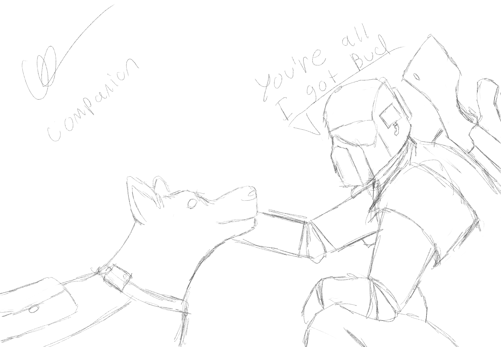
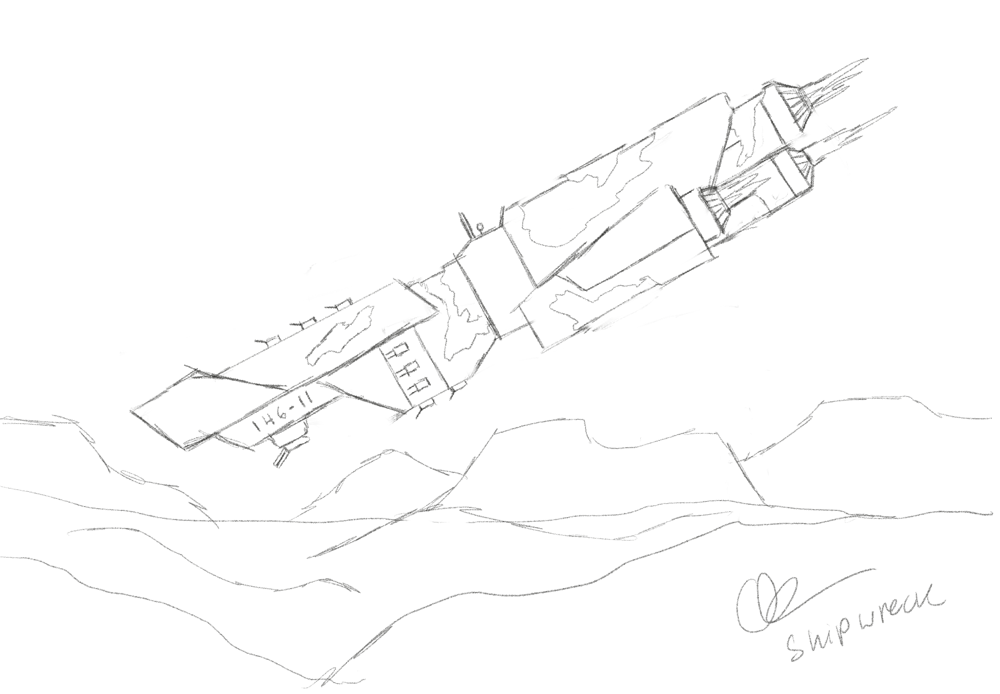
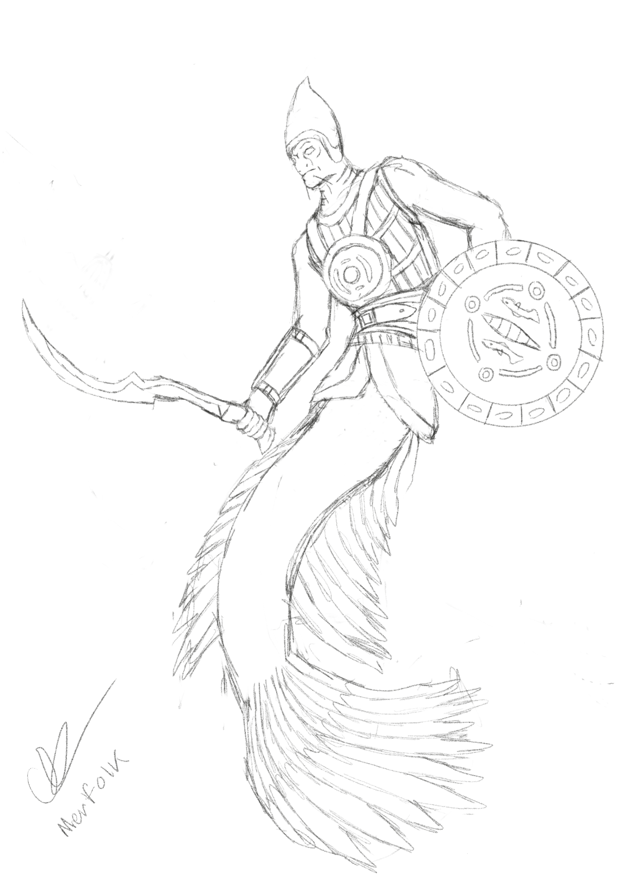
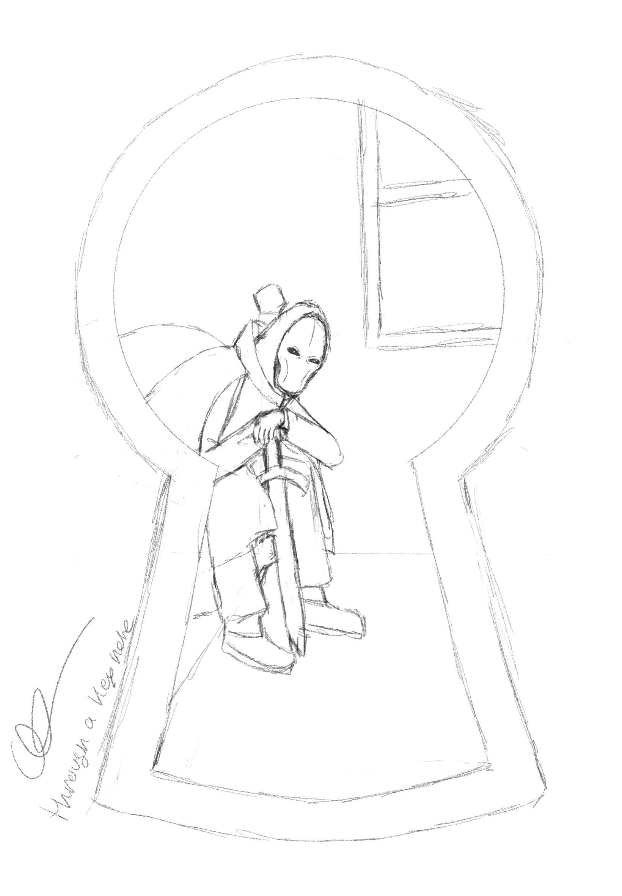
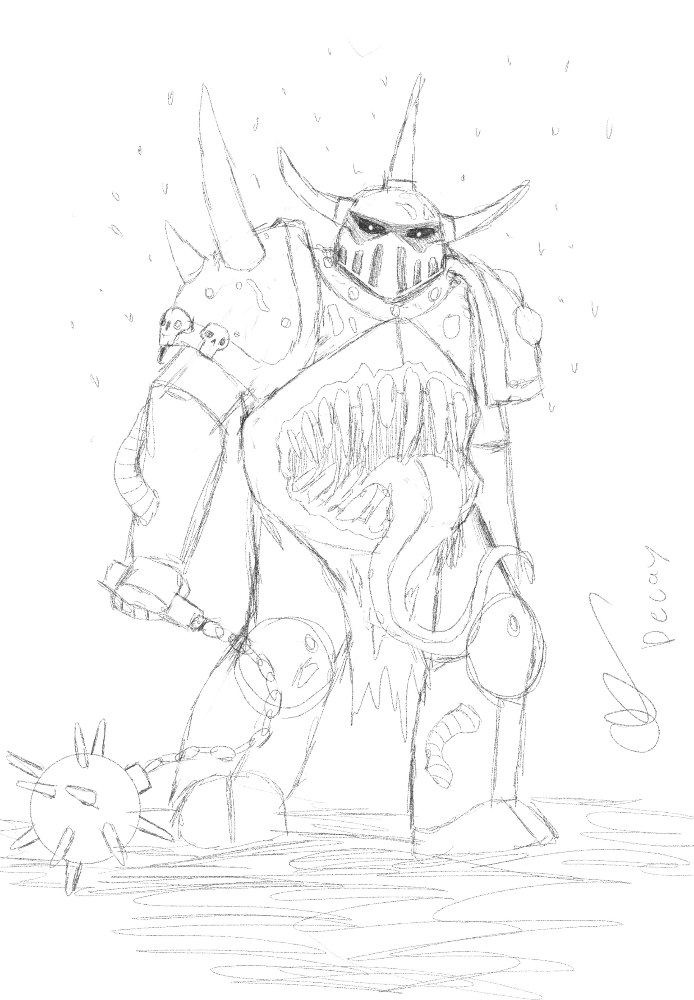
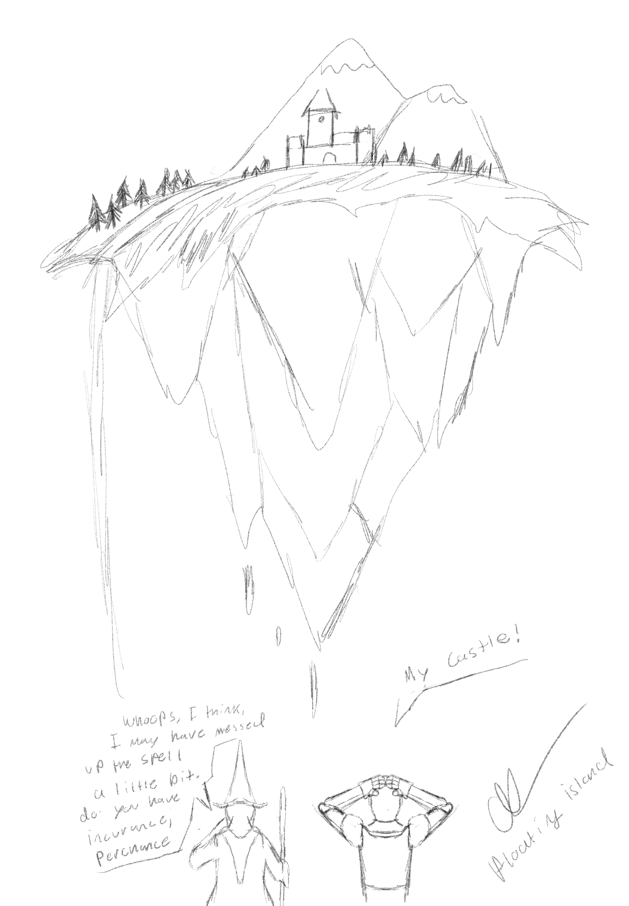

Here is some of my quick sketches.






Here is a summary of a story I like.
One of my favorite stories is "Roadside Picnic" by the Arkady Strugatsky and Boris Strugatsky. Roadside Picnic is a sci-fi novel set years after aliens briefly visited Earth, leaving behind dangerous areas called “Zones” filled with dangerous anomalies that can kill you at any moment and extremely valuable objects that have strange properties. The story follows Redrick “Red” Schuhart. Red is known as a stalker, a person who enters these zones illegally to receive the strangest objects to sell. As he risks his life in the zone, he struggles with effects caused by an over exposure to it. I read this story as it was an inspiration for S.T.A.L.K.E.R, one of my favorite series of games of all time.